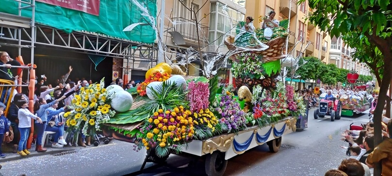
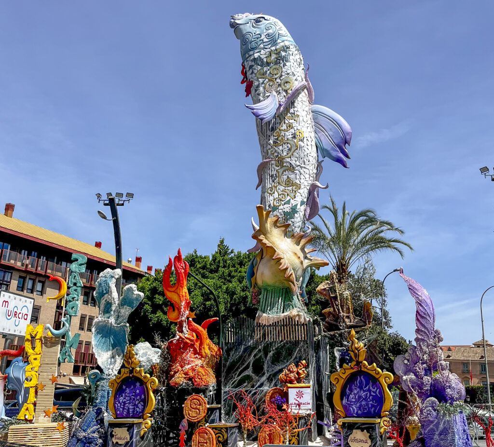

Fecha: 21 - 27 de Abril de 2025
Lugar: Murcia
La Semana de Fiestas de Primavera de Murcia es una celebración llena de color, música y tradición. Durante esta semana se celebran tres eventos principales que representan la identidad y el espíritu festivo de la ciudad:
Bando de la Huerta
22 de Abril

El Bando de la Huerta es uno de los desfiles más emblemáticos de la fiesta. Los murcianos se visten con trajes tradicionales huertanos y recorren el centro de la ciudad al son de la música popular, celebrando las costumbres y la cultura murciana.
Actividades principales del Bando de la Huerta:
- Desfile de carros engalanados y grupos folclóricos
- Concurso de trajes tradicionales
- Exhibiciones de danzas y músicas populares
- Degustación de productos típicos murcianos
Batalla de las Flores
24 de Abril
El lunes de la Batalla de las Flores es otro de los eventos más esperados. Durante este evento, los participantes lanzan flores y pétalos en un desfile lleno de color. Se celebran carrozas decoradas con flores, donde las reinas y figuras festivas lanzan flores al público.
Actividades destacadas de la Batalla de las Flores:
- Desfile de carrozas decoradas con flores
- Competición de lanzamiento de flores entre los participantes
- Concurso de la mejor carroza floral
- Actuaciones musicales y bailes en la calle
Entierro de la Sardina
26 de Abril
El Entierro de la Sardina pone fin a la Semana de Fiestas de Primavera. Es un evento simbólico y satírico en el que se "entierra" una figura en forma de sardina para despedir las fiestas con humor. Acompañado de un gran desfile de carrozas y miles de personas enmascaradas, el evento finaliza con la quema de la sardina.
Momentos destacados del Entierro de la Sardina:
- Desfile de carrozas y figuras satíricas
- Despedida festiva de las fiestas con música y humor
- Quema de la sardina al final del desfile
- Gran fiesta de clausura con conciertos y actividades nocturnas
Durante toda la semana, también podrás disfrutar de numerosos eventos paralelos, como conciertos, exposiciones, ferias de artesanía y degustaciones de la gastronomía local, que hacen de esta una de las fiestas más esperadas del año en Murcia.